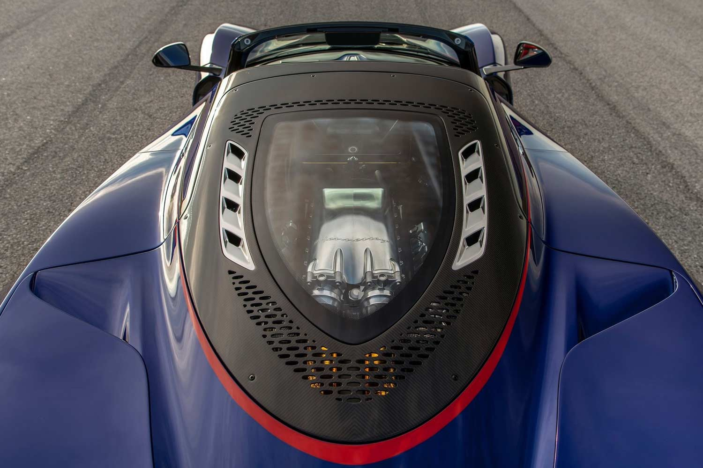

The Venom F5 Roadster is the convertible version of the exceptional Venom F5 Coupe, which means that it's one of the quickest cars on the planet. Nicknamed "Fury", the 6.6-liter twin-turbocharged V8 makes a stunning 1,817 horsepower. Performance is expected to be similar to the coupe which goes from 0-62 mph in only 2.6 seconds, although piloting the Venom F5 Roadster will be even scarier with the wind in your hair. Aimed squarely at the Bugatti Chiron and hypercars from Koenigsegg, the Venom F5 was conceived to hit well over 300 mph. Hennessey says that this is now the world's fastest and most powerful roadster.
Designed from the start to accommodate an open-top design, the Hennessey Venom F5 Roadster's dimensions are identical to the coupe's. That means it is 183.7 inches in length, 77.6 inches in width, and 44.5 inches in height. A dry weight of 3,098 pounds makes the roadster only slightly heavier than the coupe. This is because the inherent strength and rigidity of the coupe's chassis negated the need for major adjustments to the car's structure in its transition to a convertible.

The Hennessey Venom F5 Roadster's engine is the same 6.6-liter twin-turbocharged V8 as in the coupe that makes 1,817 hp at a crazy 8,000 rpm and 1,193 lb-ft of torque at 5,000 rpm. In F5 Mode, it'll rev all the way to 8,500 rpm. The roadster's power-to-weight ratio of 1.29 hp/kg is only slightly below the coupe's 1.34 hp/kg.
In the coupe, 0-62 mph is dispatched in only 2.6 seconds. 0-124 takes 4.7 and 0-186 (300 kph) is over in only 8.4 seconds. Hennessey hasn't yet published these figures for the roadster but it shouldn't be too far behind. The top speed for the rear mid-engined coupe is said to be greater than 311 mph, while the roadster can manage 300+ mph. This would surpass Hennessey's own record for convertibles after the Venom GT Spyder reached 265.6 mph. With the roof panel removed, the top speed is lower, however, but this should still end up being the quickest drop-top in the world when a top-speed run can eventually be conducted and verified. The transmission is a single-clutch semi-automatic seven-speed unit and it directs power to the rear wheels exclusively.